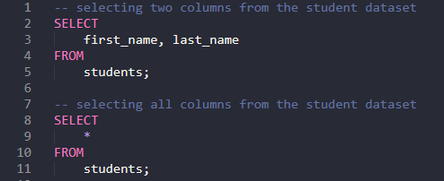
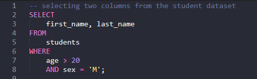
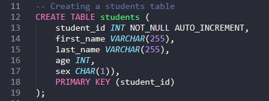
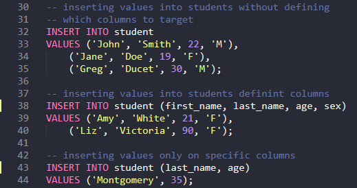
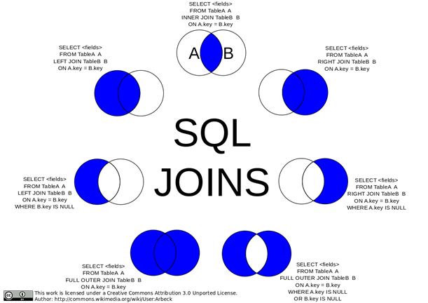
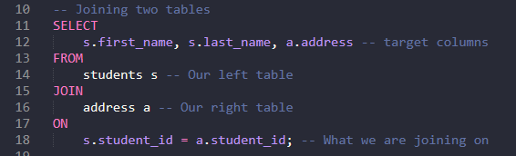
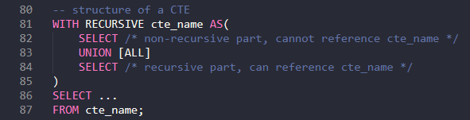
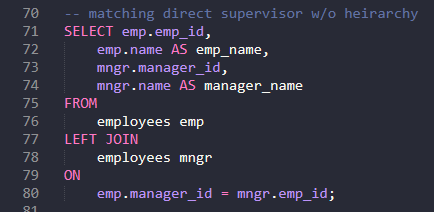
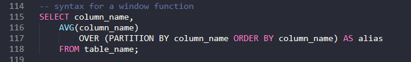
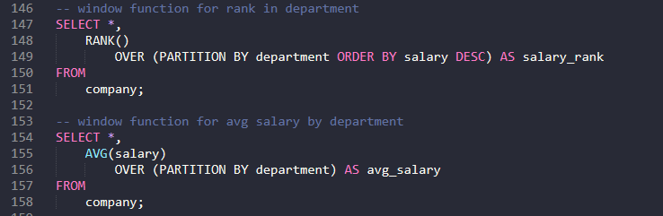

Structured Query Language or SQL has been around since the 1970s and is the most popular tool amongst all data engineers regardless of where they work. There are several different kinds of SQL. The original being MySQL. Once MySQL was bought by Oracle in 2010, the original creator started MariaDB, essentially open-source SQL. Microsoft has their own version of SQL which is SqlServer. There is also Oracle (different than MySQL) which is the most powerful but also most expensive. The last main player in the SQL space is Postgresql. This has more features than MySQL but not as user friendly. In this section, we will go over some basic SQL, more advanced functions, and finish with setting up a database.
Basic SQL
SELECT, FROM, WHERE
Across all versions of SQL there is a general syntax to follow to begin querying. There is a SELECT statement
(what you want to select from the data), a FROM statement (what dataset you want to query from), and a WHERE
statement (criteria for filtering the data). Something to note would be that you do not require a WHERE statement,
but you must always have a SELECT and FROM statement.

As stated before, the WHERE clause is optional. It is predominantly used for filtering the data.
You can use a multitude of operations in the WHERE clause such as logic statements (AND, OR), a
filter statement (“=”, “!=”, etc.), and range statements (BETWEEN, LIKE, IN).

Try guessing what the statement above would return. What we just queried is as follows, select the first and
last name from the student's data set where they are over 20 years old, and they are a male.
Creating and Inserting Data
Another fundamental task in SQL is creating a dataset and inserting data. The CREATE TABLE statement is
straightforward in how it is implemented. After the main statement, you wrap your column names and data
type for those columns in brackets. The best practice is to choose the datatype that fits the data best
(i.e., don't make an integer a varchar or string).

In the students table created above, we have a few different data types. student_id and age are both integer
data type. This datatype does not have to be pre-defined in size. We also have this other datatype varchar as
well as char. Char is used when you have a predefined length of input. Varchar is used when the input can vary
in length. Since we know the sex can only be “M” or “F” in this dataset, we can define the char as length of 1.
A name can vary and thus we use a varchar to ensure no values are dropped. You can also notice that we have an
AUTO_INCREMENT, NOT_NULL, and PRIMARY KEY statement on student_id. The AUTO_INCREMENT says that student_id
will start at 1 and with each entry increment the number by 1. NOT_NULL means this value cannot be null.
Setting a PRIMARY KEY is important on any table. This ensures that the value cannot be null, must be unique
(cannot hold a duplicate value), and allows other tables to connect to this table through FOREIGN KEYS.
Now we will look at inserting data into a table. To insert, you need the target table, the target columns, and
the values you want to insert. You can insert data without defining which columns to and in this case, you have
two options. If you are inserting data into ALL the columns in the dataset you just need to ensure you are placing
the values in the same order as they appear. Otherwise, if you are only inserting into a single column, the rest of
the columns will appear as null.

If you notice in all the examples, we did not have to enter a student_id. This is because SQL is smart enough to do
the calculation for use since we implemented an AUTO_INCREMENT. The first example is a full entry without specifying
column names. The second example accomplishes the same as the first however we specified the order and column names
being targeted. An important note about this example is that you can have your columns out of order on insertion
(i.e., if first_name is the first column in your table) as long as you insert the first name into the correlated place
you defined on your insert statement it will find the correct column to be inserted on. Our last example is inserting
only on specific columns. Here we only have a last_name and age. This means first_name and sex will appear as null in
the table.
Advanced SQL
The basics of SQL are great, but we will need a few other tools at our deposal if we really want to be an efficient Data Engineer. Here we will go over JOINS, Common Table Expressions (CTEs), and Window Functions.
JOINS
JOINS are useful as they allow us to combine tables together. In general, we won't always have all our data in a single table.
There are a few different kinds of JOINS. A normal JOIN or INNER JOIN combines two or more tables based on a related column.
A LEFT JOIN returns all entries from the left table and the matches from the right table. A RIGHT JOIN is the opposite of a
left join where it will return all entries from the right table and matched records from the left table. A FULL JOIN will
return all entries regardless of a match.

Here we have name set to “Your Name Here”. Now if we wanted to print “Your Name Here”, instead of
typing it out every time we can just call print on the variable “name”. Variables are not limited
to string type objects. In fact, you can store any Python data type in one. Variables are also
stored in memory which assists with ease of access. String variables can be declared with single
quotes () or double quotes (“), in this example we used double quotes. Lastly, variables are
case sensitive. This means that if you have a variables “A” and another variables “a”, they
will not overwrite each other.

See how we added an “s” in front of all the column names. This allows SQL to know which table we are pulling information from.
The reason for this is once we begin joining tables often there is a column that will match between both tables. Thus, by
giving an abbreviation we know which table we are referencing.
Common Table Expresssion (CTE)
Common Table Expressions or CTEs for short are extremely useful as they are temporary tables that you can reference with another
SELECT, INSERT, UPDATE, or DELETE statement. The reason this is so important is that we can perform table calculations without
altering our original table. Another common case for CTEs is their use of recursion. The “Hello World” or a recursive CTE would
be displaying an employee hierarchy.

Before proceeding, try writing a query that will give you the managers name for each employee. Your table should have an employee id
which is the primary key, name, and manager id all with the corresponding datatype. Insert at least 10 employees into the table.
In the example below, we have a query that will give you the employees table and a new column called 'manager_name' which is the employees
direct manager.

If we make a CTE, we can get the full hierarchy path rather than just the direct manager. Again, before proceeding try this on your own.
See if you can write a CTE that will give you the FULL hierarchy for each employee. This means that if Ryan reports to Robert and Robert
reports to Ken, at Roberts level we will only show him reporting to Ken, but at Ryans level we will see him reporting to Robert
followed by Ken.
Answer to recursive manager
The output of the CTE gives us a new column called 'reports_to' which gives up a path on employee hierarchy. Our non-recursive query
gives us the first level of the branch (i.e., where to start). The recursive query then builds off the non-recursive branch until all
employees have been put on a path.
Window Functions
Window Functions are useful as they allow aggregation over a column as well as allow for partitioning. This means that if you need to do an aggregation,
but also have the aggregation separated out by a group you can.
The functions of window functions are SUM, COUNT, AVERAGE, MAX, MIN, RANK, DENSE_RANK, and ROW_NUMBER.
SUM, COUNT, AVERAGE, MAX, and MIN are all aggregation functions. They will do exactly what you would expect on them. Each will do their respective
calculation over the partition. RANK will assign a rank to each row in the partition. DENSE_RANK is similar to RANK, however there are no repetitions
in a partition. If two columns have the same value, DENSE_RANK will increment the second value rather than give it the same rank. ROW_NUMBER
assigns consecutive row numbers in a partition. No two rows can have the same row number.

As seen from the example above, the syntax for window functions is simple. You start by selecting your target columns. You then specify the window
function and what it will do. The partition and order by clause are not required, but typically if you are using a window function the point is
to partition something. Partitioning allows you to separate your aggregation into groups. An example would be that you want to get the average
salary by department at a company. In this case we could partition by department. Lastly you select the target table you want to
pull information from.

Exercise: Leetcode Databases
Below are a list of Leetcode questions that will allow you to progress your skills in SQL. They are in order from easiest to hardest. You don't have to finish all these problems in on sitting. We would suggest working through one a dat over the course of your internship.
1. Game Play Analysis I
2. Combine Two Tables
3. Duplicate Emails
4. Classes More Than 5 Students
5. consecutive Numbers


{kind=link}